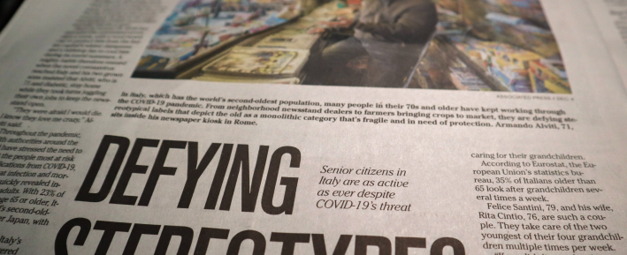

March 14, 2022
18:45
Politics
Islamic Relief’s Aya El Fatih spent a few days with a refugee family in Sudan, to find out how people live after fleeing terrible violence. In their small tent she found stories of loss, resilience, hospitality and hope.
The white tents in Um Rakuba refugee camp are arranged in neat rows as far as the eye can see. Thousands of refugees have fled the violence in the Tigray region of Ethiopia and sought shelter in this sprawling camp in eastern Sudan.
One of the many tents, not far from Islamic Relief’s office, is now home to 35-year-old Akbert and her children.
Tragedy strikes
Back home in Ethiopia, Akbert lived happily with her husband, who was the family’s main breadwinner. But their life changed as the war in Tigray intensified. Her husband was killed and his livestock was stolen. The next day Akbert had to bury his body and start caring for their 7 children on her own.
Thinking of her children’s safety, Akbert decided to flee. “It was God’s will,” she says. “I was worried about what was going to happen to us, whether we were going to live or die.”
Akbert and her children crossed the Blue Nile River and escaped into Sudan, where they were welcomed by local people who helped them ride a tractor the rest of the way to Um Rakuba camp.
Making a new home in the camp
In the camp, Akbert’s 3-year-old daughter, Radyet, is very attached to her mother and follows her around everywhere.
Akbert has had to cope with new surroundings and feed her children with whatever is available. “I was very scared when I first came here,” she says. “I worry about my children when I run out of food, how can I explain it to them? We are adults so we understand the situation, but they are only children. The water is also scarce in the camp. I have to go a long way to get water.”
When she wakes up every morning, she cooks food for her children and sends them to school, but she faces difficulty cooking because she doesn’t always have firewood.
With her neighbours, Akbert shares a clay stove where she makes Injera, traditional Ethiopian flatbread, which is an integral part of their diet and a taste of the home they left behind. The refugees have made the clay stoves themselves so they can make Injera.
Even though her tent is a small place for 8 people, Akbert manages to keep it organised and gives it warmth. She throws some incense (commonly used aromatic wood in Ethiopian and Sudanese culture) into flaming coals. A beautiful scent soon saturates the tent as a wisp of smoke rises from the hot coals. The smell often tempts neighbours to join Akbert for coffee in her tent.

Akbert with her 3 girls, Azmara, Erdanus and little Radyet, Um-Rakoba Refugee Camp, Gedarif State, Sudan.
Hospitality and strong coffee
She starts preparing the coffee by roasting the beans in a fryer, stirring until they turn a dark rich colour. With a mortar and pestle she then grinds the roasted beans into a powder, which she adds to boiling water.
She hosts her neighbours by pouring the strong-smelling coffee into small porcelain cups and serving it with popcorn in her warm, incense-saturated tent.
People in the camp do not have much, but hospitality is a big part of local culture and they share what they have with each other.